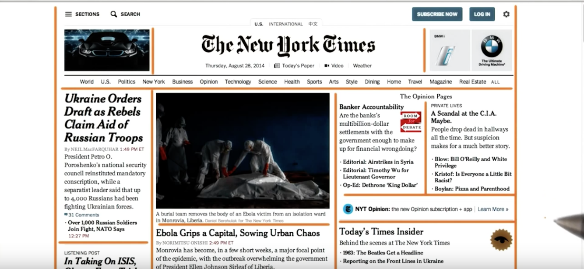

Udacity Reflection 1
Sprint 2
07 September 2018
What is grid based design?
Grid based design follows a grid design pattern, which our eyes are naturally drawn to.
Grid based design provides for a clean user experience, and so nearly all websites follow this pattern.
"
Whats all the hype about responsive webpages?
Responsibe webpages are cool because they allow users to have the same experience of the website regardless of
how they are viewing the content - whether it be ipad,laptop, or phone. The webpage responds to the device.
What is semantic structure?
Semantic tags are used in HTML to style the page. For example the tag -h2- indicates that the text is a ...
Heading!
Other tags instruct the page that the text should be bold, italic, or even that an image should be inserted.
Any other points you found interesting and want to reflect on?
Honestly I still feel like I have only scratched the surface with this content. I'm still
a bit confused about the relationship between CSS. HTML. and the DOM, and I find the DOM
hard to read - it's not a great user experience. The thing I found most interesting in this lesson was
noticing how all websites use a grid layout, and seeing how to create negative space.